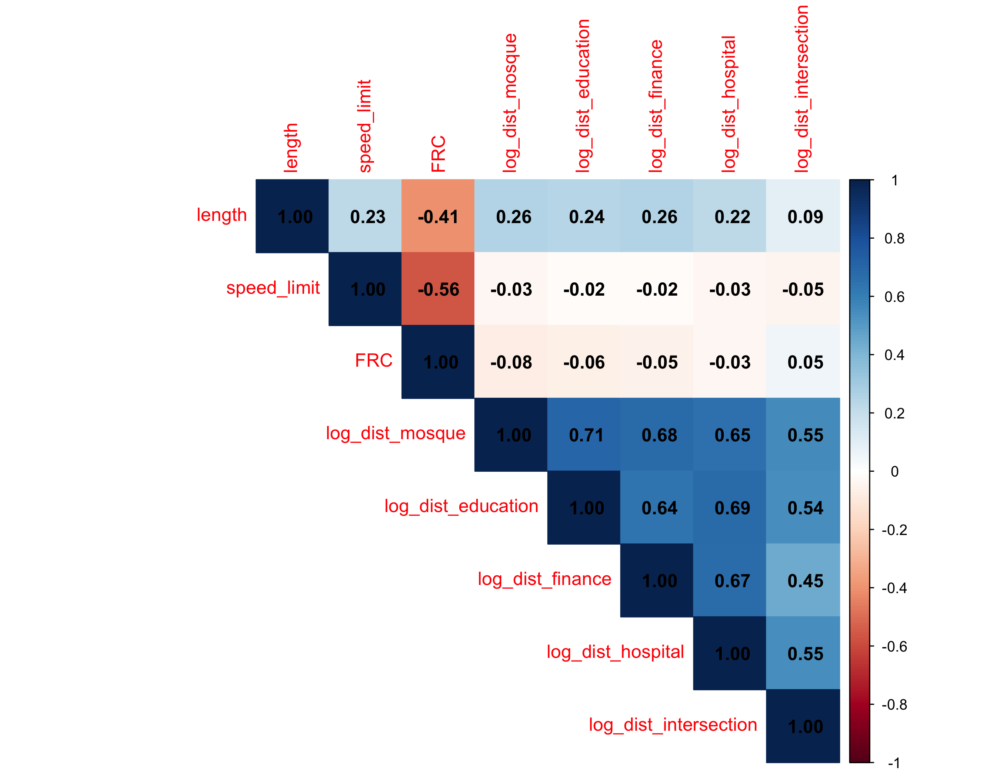
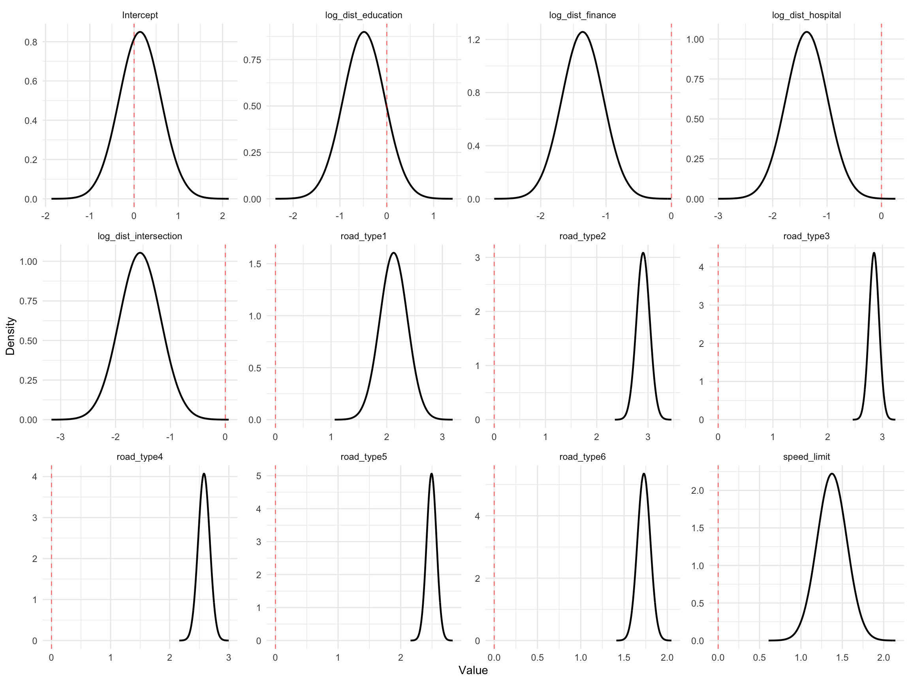
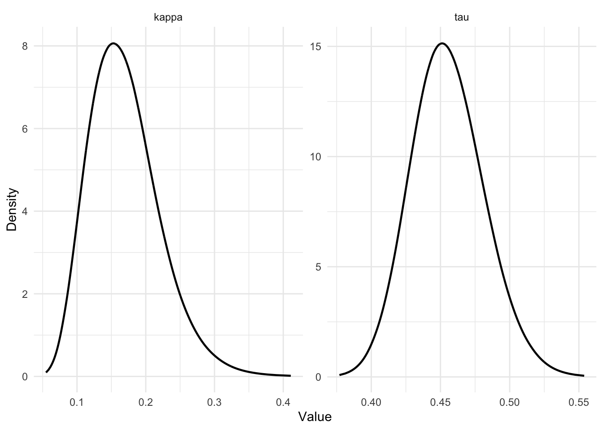
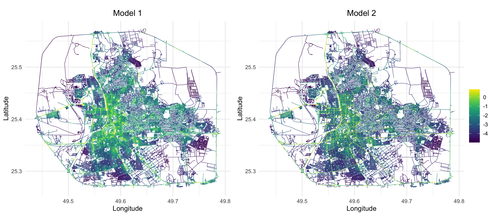
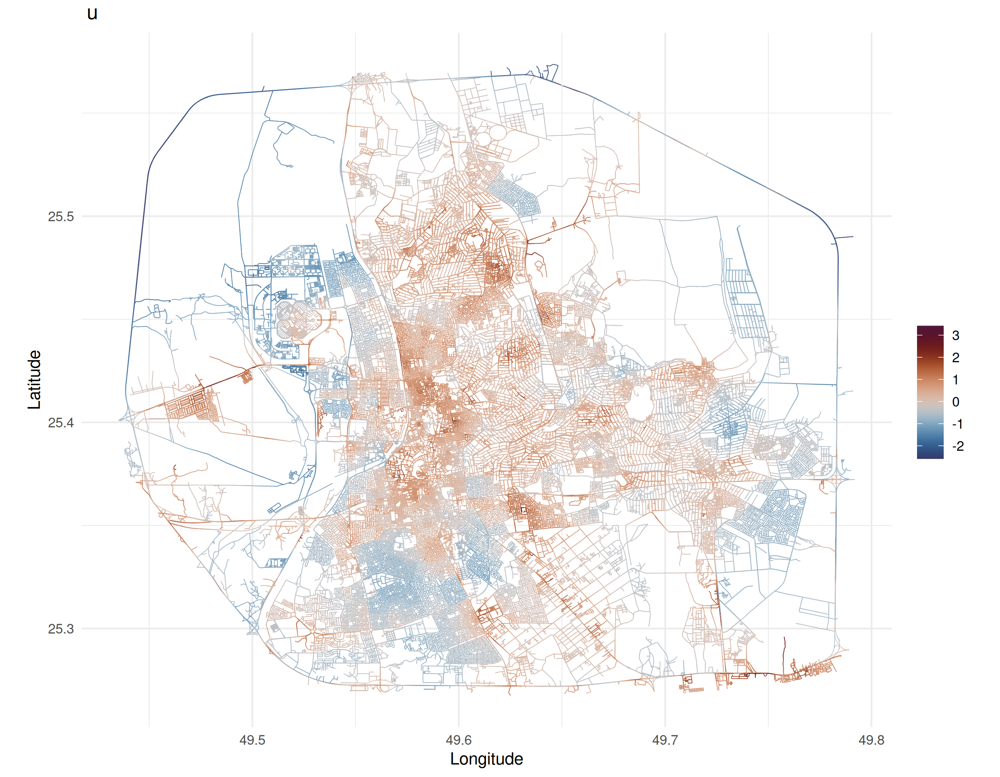

In this section, we fit Model 2 as described in the paper, which extends Model 1 by incorporating spatial covariates:
\[\log(\lambda(s)) = \beta_0 + \sum_{i=1}^{11} \beta_i X_i(s) + u(s)\]
where \(X_i\) are spatial covariates and \(u(s)\) is the Whittle–Matérn field. The covariates include functional road class (FRC, one-hot encoded), speed limit, and log-transformed distances to amenities (education, finance, hospitals, intersections). Details on covariate extraction are in Extracting Covariates and Computing Spatial Covariates.
We fit the model using the lgcp_graph wrapper from the
MetricGraph package.
library(MetricGraph)
library(INLA)
library(sf)
library(dplyr)
# Load data, graph, and precomputed mesh covariates
data <- readRDS("Data/data_all_reasons_with_distances_7FRC.rds")
graph <- readRDS("Data/graph_mesh_pruned_50m_7FRC.rds")
mesh_covariates <- readRDS("Data/mesh_locations_pruned_50m_with_distances_7FRC.rds")
summary(graph)## A metric graph object with:
##
## Vertices:
## Total: 67221
## Degree 1: 15; Degree 2: 6285; Degree 3: 6002; Degree 4: 18062; Degree 5: 1624;
## Degree 6: 31762; Degree 7: 147; Degree 8: 3316; Degree 10: 8;
## With incompatible directions: 925
##
## Edges:
## Total: 164584
## Lengths:
## Min: 0.002995733 ; Max: 13.26332 ; Total: 15454.57
## Weights:
## Columns: FRC SpeedLimit .weights
## That are circles: 0
##
## Graph units:
## Vertices unit: degree ; Lengths unit: km
##
## Longitude and Latitude coordinates: TRUE
## Which spatial package: sp
## CRS: +proj=longlat +ellps=WGS84 +no_defs
##
## Some characteristics of the graph: Not computed.
##
## Computed quantities inside the graph:
## Laplacian: FALSE ; Geodesic distances: FALSE
## Resistance distances: FALSE ; Finite element matrices: FALSE
##
## Mesh:
## Max h_e: 0.04999975 ; Min n_e: 0
##
## Data: The graph has no data!
##
## Tolerances:
## vertex-vertex: 0.001
## vertex-edge: 0.001
## edge-edge: 0We add the accident observations to the graph and extract edge-level covariates (FRC, speed limit, road length). The length covariate is converted from meters to kilometers for consistency with the distance-to-amenity covariates.
# Add raw observations to graph
graph$add_observations(
data = data, normalized = TRUE, tolerance = 0.6, group = "YearNew",
clear_obs = TRUE, duplicated_strategy = "jitter"
)
# Create a "Length" covariate (edge length in km)
graph$set_edge_weights(weights = graph$get_edge_weights() %>%
mutate(Length = graph$get_edge_lengths()))
data_on_graph <- graph$get_data()
data_on_graph$Length <- data_on_graph$Length / 1000 # convert to km
ss <- graph$get_data()
graph$compute_mesh_weights()
n_accidents <- sum(!is.na(ss$AccidentSeverityId)) # 2482For the lgcp_graph wrapper, covariates must be available
at both observation and mesh locations. We extract edge weights at mesh
nodes using edgeweight_to_data() and merge with the
precomputed amenity distances.
alpha <- 1
atilde <- graph$mesh$weights
# Get covariates at mesh locations from edge weights
data_on_mesh <- graph$edgeweight_to_data(mesh = TRUE, add = FALSE,
return = TRUE, normalized = TRUE) %>%
dplyr::filter(.group == 2015)
# Merge with precomputed amenity distances
data_on_mesh <- merge(data_on_mesh, mesh_covariates,
by = c(".edge_number", ".distance_on_edge"))
data_on_mesh <- st_as_sf(data_on_mesh, coords = c("x", "y"), crs = 4326)
YearNew <- unique(data_on_graph$YearNew)
n_accidents <- table(data_on_graph$YearNew)All covariates are normalized using min–max scaling applied jointly across observation and mesh locations to ensure consistency. This is important because the covariates must be on comparable scales for the model to fit well.
min_max_normalize <- function(x) {
return((x - min(x)) / (max(x) - min(x)))
}
# Columns to normalize
columns_to_normalize <- c("Length", "SpeedLimit",
"log_distance_to_finance", "log_distance_to_hospital",
"log_distance_to_intersection", "log_distance_to_education")
# Combine graph and mesh data, normalize jointly, then split back
graph_data <- data_on_graph[, columns_to_normalize]
mesh_data <- data_on_mesh[, columns_to_normalize]
combined <- dplyr::bind_rows(graph_data, mesh_data) %>% dplyr::select(-geometry)
for (col in columns_to_normalize) {
combined[[col]] <- min_max_normalize(combined[[col]])
}
normalized_graph_data <- combined[1:nrow(graph_data), ]
normalized_mesh_data <- combined[(nrow(graph_data) + 1):nrow(combined), ]
data_on_graph[, columns_to_normalize] <- normalized_graph_data
data_on_mesh[, columns_to_normalize] <- normalized_mesh_data
# Reorder mesh data to match graph$mesh$VtE ordering
data_on_mesh <- match_mesh_data(graph, data_on_mesh)
# Verify ordering:
sum((graph$mesh$VtE - as.matrix(sf::st_drop_geometry(data_on_mesh[, 1:2])))^2)## [1] 0Functional road class (FRC) is encoded as dummy variables. FRC7 is used as the reference category (dropped from the model).
road_types_graph_data_dummy <- as.data.frame(model.matrix(~ factor(FRC) - 1, data = data_on_graph))
colnames(road_types_graph_data_dummy) <- c("FRC1", "FRC2", "FRC3", "FRC4", "FRC5", "FRC6", "FRC7")
road_types_graph_mesh_dummy <- as.data.frame(model.matrix(~ factor(FRC) - 1, data = data_on_mesh))
colnames(road_types_graph_mesh_dummy) <- c("FRC1", "FRC2", "FRC3", "FRC4", "FRC5", "FRC6", "FRC7")Before fitting, we check correlations among covariates to detect multicollinearity. We excluded mosques due to high correlation with other distance covariates.

We add the observed events and provide the covariates at mesh
locations via manual_covariates. The wrapper handles
integration weights internally.
n_total <- sum(n_accidents)
graph$clear_observations()
# Add observed events with covariates
graph$add_observations(
data = data.frame(
y = rep(1, n_total),
Intercept = 1,
speed_limit = data_on_graph$SpeedLimit,
road_type1 = road_types_graph_data_dummy$FRC1,
road_type2 = road_types_graph_data_dummy$FRC2,
road_type3 = road_types_graph_data_dummy$FRC3,
road_type4 = road_types_graph_data_dummy$FRC4,
road_type5 = road_types_graph_data_dummy$FRC5,
road_type6 = road_types_graph_data_dummy$FRC6,
log_dist_education = data_on_graph$log_distance_to_education,
log_dist_finance = data_on_graph$log_distance_to_finance,
log_dist_hospital = data_on_graph$log_distance_to_hospital,
log_dist_intersection = data_on_graph$log_distance_to_intersection,
edge_number = data_on_graph$.edge_number,
distance_on_edge = data_on_graph$.distance_on_edge
),
normalized = TRUE, duplicated_strategy = "jitter"
)
# Covariates at mesh locations (for integration)
manual_cov <- data.frame(
Intercept = rep(1, nrow(graph$mesh$VtE)),
speed_limit = data_on_mesh$SpeedLimit,
road_type1 = road_types_graph_mesh_dummy$FRC1,
road_type2 = road_types_graph_mesh_dummy$FRC2,
road_type3 = road_types_graph_mesh_dummy$FRC3,
road_type4 = road_types_graph_mesh_dummy$FRC4,
road_type5 = road_types_graph_mesh_dummy$FRC5,
road_type6 = road_types_graph_mesh_dummy$FRC6,
log_dist_education = data_on_mesh$log_distance_to_education,
log_dist_finance = data_on_mesh$log_distance_to_finance,
log_dist_hospital = data_on_mesh$log_distance_to_hospital,
log_dist_intersection = data_on_mesh$log_distance_to_intersection,
coord_x = graph$mesh$V[,1],
coord_y = graph$mesh$V[,2],
edge_number = data_on_mesh$.edge_number,
distance_on_edge = data_on_mesh$.distance_on_edge,
.group = 1
)We build the SPDE model and fit using the lgcp_graph
wrapper. The formula includes the intercept, speed limit, FRC categories
(1–6, with FRC7 as reference), log-distances to amenities, and the
Whittle–Matérn field.
spde_model <- graph_spde(graph, alpha = 1, LGCP = TRUE,
parameterization = "spde", shared_lib="rSPDE")
system.time(fit_model2 <- lgcp_graph(
y ~ -1 + Intercept + speed_limit +
road_type1 + road_type2 + road_type3 + road_type4 + road_type5 + road_type6 +
log_dist_education + log_dist_hospital + log_dist_finance + log_dist_intersection +
f(field, model = spde_model),
graph = graph,
manual_covariates = manual_cov,
interpolate = FALSE,
use_current_mesh = TRUE,
control.compute = list(config = TRUE),
control.fixed = list(prec = list(Intercept = 0, speed_limit = 0,
road_type1 = 0, road_type2 = 0, road_type3 = 0,
road_type4 = 0, road_type5 = 0, road_type6 = 0)),
control.inla = list(control.vb = list(enable = FALSE), int.strategy = "eb")
))## user system elapsed
## 213.105 4.744 163.277# user system elapsed
# 199.102 4.405 158.070
# Time used:
# Pre = 4.29, Running = 66.5, Post = 11.9, Total = 82.7
summary(fit_model2)## Time used:
## Pre = 2.17, Running = 62.4, Post = 12, Total = 76.6
## Fixed effects:
## mean sd 0.025quant 0.5quant 0.975quant mode kld
## Intercept -0.204 0.429 -1.045 -0.204 0.636 -0.204 0
## speed_limit 1.372 0.179 1.021 1.372 1.723 1.372 0
## road_type1 2.153 0.249 1.665 2.153 2.641 2.153 0
## road_type2 2.936 0.130 2.682 2.936 3.191 2.936 0
## road_type3 2.872 0.091 2.693 2.872 3.051 2.872 0
## road_type4 2.609 0.098 2.417 2.609 2.802 2.609 0
## road_type5 2.518 0.079 2.363 2.518 2.672 2.518 0
## road_type6 1.741 0.075 1.595 1.741 1.887 1.741 0
## log_dist_education -0.442 0.441 -1.306 -0.442 0.422 -0.442 0
## log_dist_hospital -1.295 0.367 -2.014 -1.295 -0.576 -1.295 0
## log_dist_finance -1.388 0.320 -2.015 -1.388 -0.761 -1.388 0
## log_dist_intersection -1.271 0.346 -1.950 -1.271 -0.593 -1.271 0
##
## Random effects:
## Name Model
## field CGeneric
##
## Model hyperparameters:
## mean sd 0.025quant 0.5quant 0.975quant mode
## Theta1 for field 0.795 0.058 0.677 0.795 0.907 0.799
## Theta2 for field -1.798 0.303 -2.423 -1.788 -1.233 -1.743
##
## Marginal log-Likelihood: -3954.30
## is computed
## Posterior summaries for the linear predictor and the fitted values are computed
## (Posterior marginals needs also 'control.compute=list(return.marginals.predictor=TRUE)')spde_result <- spde_metric_graph_result(fit_model2, "field", spde_model)
result_df <- data.frame(
parameter = c("kappa", "tau"),
mean = c(spde_result$summary.kappa$mean, spde_result$summary.tau$mean),
lower = c(spde_result$summary.kappa$"0.025quant", spde_result$summary.tau$"0.025quant"),
upper = c(spde_result$summary.kappa$"0.975quant", spde_result$summary.tau$"0.975quant"),
mode = c(spde_result$summary.kappa$mode, spde_result$summary.tau$mode)
)
print(result_df)## parameter mean lower upper mode
## 1 kappa 0.1731994 0.08918389 0.2902374 0.1565238
## 2 tau 0.4524903 0.40391370 0.5074109 0.4484603## mean sd 0.025quant 0.5quant 0.975quant
## Intercept -0.2041706 0.42886859 -1.044738 -0.2041706 0.6363964
## speed_limit 1.3722258 0.17901054 1.021372 1.3722258 1.7230800
## road_type1 2.1533611 0.24893280 1.665462 2.1533611 2.6412604
## road_type2 2.9364785 0.12980944 2.682057 2.9364785 3.1909004
## road_type3 2.8720162 0.09128637 2.693098 2.8720162 3.0509342
## road_type4 2.6092340 0.09815618 2.416851 2.6092340 2.8016166
## road_type5 2.5177597 0.07893072 2.363058 2.5177597 2.6724610
## road_type6 1.7409923 0.07462964 1.594721 1.7409923 1.8872637
## log_dist_education -0.4419185 0.44098770 -1.306238 -0.4419185 0.4224015
## log_dist_hospital -1.2950591 0.36698093 -2.014328 -1.2950591 -0.5757897
## log_dist_finance -1.3880687 0.31998835 -2.015234 -1.3880687 -0.7609031
## log_dist_intersection -1.2712909 0.34606084 -1.949558 -1.2712909 -0.5930241
## mode kld
## Intercept -0.2041706 1.458214e-17
## speed_limit 1.3722258 2.878843e-15
## road_type1 2.1533611 6.106063e-15
## road_type2 2.9364785 3.987360e-14
## road_type3 2.8720162 1.499058e-15
## road_type4 2.6092340 4.477383e-15
## road_type5 2.5177597 0.000000e+00
## road_type6 1.7409923 3.387397e-14
## log_dist_education -0.4419185 3.505882e-18
## log_dist_hospital -1.2950591 0.000000e+00
## log_dist_finance -1.3880687 0.000000e+00
## log_dist_intersection -1.2712909 0.000000e+00# Marginal posterior densities
marginals_fixed <- fit_model2$marginals.fixed
df_fixed <- do.call(rbind, lapply(names(marginals_fixed), function(name) {
m <- inla.smarginal(marginals_fixed[[name]])
data.frame(parameter = name, x = m$x, y = m$y)
}))
ggplot(df_fixed, aes(x = x, y = y)) +
geom_line(linewidth = 0.8) +
geom_vline(xintercept = 0, linetype = "dashed", color = "red", alpha = 0.5) +
facet_wrap(~parameter, scales = "free", ncol = 4) +
labs(x = "Value", y = "Density") +
theme_minimal()
marginals_spde <- rbind(
data.frame(
parameter = "kappa",
x = spde_result$marginals.kappa$kappa[, 1],
y = spde_result$marginals.kappa$kappa[, 2]
),
data.frame(
parameter = "tau",
x = spde_result$marginals.tau$tau[, 1],
y = spde_result$marginals.tau$tau[, 2]
)
)
ggplot(marginals_spde, aes(x = x, y = y)) +
geom_line(linewidth = 0.8) +
facet_wrap(~parameter, scales = "free") +
labs(x = "Value", y = "Density") +
theme_minimal()
We compare the estimated log-intensity surfaces from Model 1 (intercept + field only) and Model 2 (with covariates) side by side, using a shared color scale.
library(scico)
library(ggplot2)
library(viridis)
library(gridExtra)
library(cowplot)
model1 <- readRDS("Data/fit_model1.rds")
# Common color range across both models (1st and 99th percentile)
log_lambda1 <- model1$graph_fitted_data$.linear_predictor
log_lambda2 <- fit_model2$graph_fitted_data$.linear_predictor
common_range <- quantile(c(log_lambda1, log_lambda2), c(0.01, 0.99))
p1 <- graph$plot_function(
data = ".linear_predictor",
newdata = model1$graph_fitted_data,
vertex_size = 0, edge_width = 0.2,
scale_color = scale_color_viridis(limits = common_range, oob = scales::squish)
) + ggtitle("Model 1") + theme_minimal() +
theme(
plot.title = element_text(hjust = 0.5),
legend.position = "none"
)
p2 <- graph$plot_function(
data = ".linear_predictor",
newdata = fit_model2$graph_fitted_data,
vertex_size = 0, edge_width = 0.2,
scale_color = scale_color_viridis(limits = common_range, oob = scales::squish)
) + ggtitle("Model 2") + theme_minimal() +
theme(
plot.title = element_text(hjust = 0.5)
)
shared_legend <- cowplot::get_legend(p2)
png("Figures/model2_log_intensity_combined.png", width = 3300, height = 1500, res = 300)
gridExtra::grid.arrange(
p1,
p2 + theme(legend.position = "none"),
shared_legend,
widths = c(10, 10, 1),
layout_matrix = rbind(c(1, 2, 3)),
padding = unit(0, "cm")
)
dev.off()
The latent Gaussian field \(u(s)\) captures spatial variation not explained by the covariates.
png("Figures/model2_posterior_u.png", height = 3 * 700, width = 3 * 900, res = 300)
p3 <- graph$plot_function(
data = ".predicted_field",
newdata = fit_model2$graph_fitted_data,
vertex_size = 0, edge_width = 0.2,
scale_color = scale_color_scico(palette = "vikO", midpoint = 0)) + theme_minimal()
print(p3)
dev.off()
# Log of fitted values (log-intensity)
fit_model2$graph_fitted_data$.log_fitted_values <- log(fit_model2$graph_fitted_data$.fitted_values)
png("Figures/model2_log_fitted_values.png", height = 3 * 700, width = 3 * 900, res = 300)
p4 <- graph$plot_function(data = ".log_fitted_values", newdata = fit_model2$graph_fitted_data,
vertex_size = 0, edge_width = 0.2, scale_color = scale_color_scico(palette = "vik", midpoint = 0)) + theme_minimal()
print(p4)
dev.off()
## R version 4.6.0 (2026-04-24)
## Platform: aarch64-apple-darwin23
## Running under: macOS Tahoe 26.2
##
## Matrix products: default
## BLAS: /Library/Frameworks/R.framework/Versions/4.6/Resources/lib/libRblas.0.dylib
## LAPACK: /Library/Frameworks/R.framework/Versions/4.6/Resources/lib/libRlapack.dylib; LAPACK version 3.12.1
##
## locale:
## [1] en_US.UTF-8/en_US.UTF-8/en_US.UTF-8/C/en_US.UTF-8/en_US.UTF-8
##
## time zone: Asia/Almaty
## tzcode source: internal
##
## attached base packages:
## [1] stats graphics grDevices utils datasets methods base
##
## other attached packages:
## [1] ggplot2_4.0.3 dplyr_1.2.1 sf_1.1-1 INLA_25.10.19
## [5] Matrix_1.7-5 MetricGraph_1.6.0
##
## loaded via a namespace (and not attached):
## [1] gtable_0.3.6 xfun_0.57 bslib_0.10.0
## [4] lattice_0.22-9 vctrs_0.7.3 tools_4.6.0
## [7] spatstat.utils_3.2-3 generics_0.1.4 parallel_4.6.0
## [10] tibble_3.3.1 proxy_0.4-29 pkgconfig_2.0.3
## [13] KernSmooth_2.23-26 ggnewscale_0.5.2 RColorBrewer_1.1-3
## [16] S7_0.2.2 lifecycle_1.0.5 compiler_4.6.0
## [19] farver_2.1.2 deldir_2.0-4 fmesher_0.7.0
## [22] MatrixModels_0.5-4 codetools_0.2-20 htmltools_0.5.9
## [25] class_7.3-23 sass_0.4.10 yaml_2.3.12
## [28] pillar_1.11.1 jquerylib_0.1.4 tidyr_1.3.2
## [31] classInt_0.4-11 cachem_1.1.0 spatstat.univar_3.2-0
## [34] wk_0.9.5 iterators_1.0.14 foreach_1.5.2
## [37] spatstat.geom_3.8-1 Deriv_4.2.0 tidyselect_1.2.1
## [40] digest_0.6.39 purrr_1.2.2 labeling_0.4.3
## [43] splines_4.6.0 polyclip_1.10-7 fastmap_1.2.0
## [46] grid_4.6.0 cli_3.6.6 magrittr_2.0.5
## [49] dichromat_2.0-0.1 broom_1.0.13 e1071_1.7-17
## [52] spatstat.data_3.1-9 withr_3.0.2 scales_1.4.0
## [55] backports_1.5.1 sp_2.2-1 rmarkdown_2.31
## [58] igraph_2.3.2 otel_0.2.0 RANN_2.6.2
## [61] png_0.1-9 zoo_1.8-15 evaluate_1.0.5
## [64] knitr_1.51 doParallel_1.0.17 s2_1.1.11
## [67] rlang_1.2.0 Rcpp_1.1.1-1.1 glue_1.8.1
## [70] DBI_1.3.0 rstudioapi_0.18.0 rSPDE_2.5.2.9000
## [73] jsonlite_2.0.0 R6_2.6.1 units_1.0-1